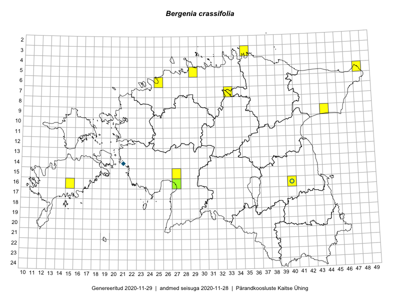

Bergenia crassifolia
Uuendatud: 2016-12-02
Kaardile koondatud taksonid: Bergenia crassifolia (L.) Fritsch

Kaart põhineb 8 vaatlusel. Taksonit on leitud 6 ruudust.
Viited andmebaasikirjetele
- Toomas Kukk, Eerik Leibak: 2015-04-26: 05-48: GPS punkt
- Jana-Maria Habicht, Ester Valdvee: 2015-05-01: 07-33: GPS punkt
- Karin Kikas, Elle Rajandu: 2015-05-14: 16-40: GPS punkt
- Karin Kikas, Elle Rajandu: 2015-05-14: 16-40: GPS punkt
- Eerik Leibak: 2016-05-18: 09-44: ala
- Eerik Leibak: 2016-05-18: 09-44: GPS punkt
- Sander Laherand, Toomas Kukk: 2016-07-05: 06-25: GPS punkt
- Sander Laherand, Ott Luuk, Nele Jõessar: 2016-07-26: 03-35: GPS punkt